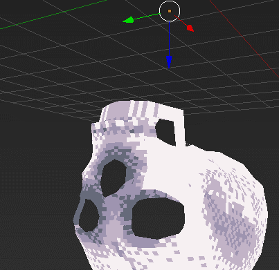
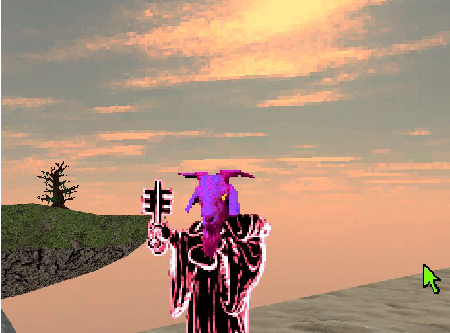

Games befasst sich mit der Schaffung von 2D-/3D-/4D-Echtzeitkunst, zum Beispiel: Videospiel-Engines, VR-Displays, Installations- und performative Verfahren. Für unsere Zwecke wird ein Spiel als Ansatz für die Wechselwirkung mit einer/einem Spieler*in oder als Anleitung für eine*n Spieler*in oder eine Zielgruppe definiert. Ohne die Teilnahme des Spielers existiert das Kunstwerk nicht. Über dieses sehr offene Prinzip hinaus kann ein Spiel alles sein. Studierende werden ermutigt, eine interdisziplinäre, kreative Praxis zu entwickeln, über Genregrenzen hinaus zu denken und Methoden zu mischen, um neue Welten zu entwickeln. Nordbau Raum: 0210


- Computer-Grafik: 3D-Modellierung und -Übertragung
- 3D-Erfassung/Bewegungserfassung
- Digitales Zeichnen und Malen
- Interaktive Systeme/interaktive Ästhetik
- Prototypenentwicklung, Spiele testen und Design-Iteration
- Künstlerische Leitung für Spiele
- Virtuelle und physische Schnittstellen